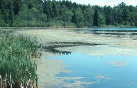

Welcome to watershed conservation practices. This webpage and the associated map page have been developed to aid environmental professionals in the identification of suitable sites for wetland restorations. The study area for this project is located near Decorah Iowa. This project is conducted at the local HUC 12 watershed scale. The watershed investigated in this report is the Dry Run watershed. Wetland restorations are of particular interest to environmental professionals due to the fact they remove large amounts of nitrates in groundwater. Nitrate loading into groundwater is the result of intensive agricultural production. Nutrient runoff from agricultural production can have major environmental implications if not attended to. Some of these implications include polluted drinking water, loss of biodiversity and degraded water quality. Intensive agricultural production results in high amounts of fertilizer being dumped into the soil, these types of products are especially common in Iowa where agriculture makes up the majority of land use. Environmental professionals have therefore devoted intensive efforts into finding suitable solutions to nutrient runoff.
Data for this project were acquired from the Iowa DNR’s NRGIS Library. The specific datasets used include a HUC 12 watershed layer, a land use raster, SSURGO soils data and a layer representing existing wetlands in the watershed. All datasets used in this project use the NAD83 UTM Zone 15 North coordinate system. Geoprocessing steps taken include clipping the necessary files to the extent of the Dry Run watershed. Further processing steps had to be taken on the soils data in order to extract only those soils with hydric ratings and those prone to flooding. Twenty-seven potential sites were identified. These finalized layers were then uploaded into web friendly ESRI Feature Layers. The web map produced for the report includes interactive functionality. A map allows the user to toggle existing wetlands in the Dry Run watershed. Users can also view restoration sites. When users hover over a restoration site the drainage area for the particular site is shown. All drainage areas are listed as either CREP eligible or Non CREP eligible. It should be noted that these classifications only pertain to the wetland to watershed area ratio requirement. CREP eligibility standards include additional requirements such as land use.
Future works should investigate additional parameters that help determine the suitability of wetland restorations. Considerations like retention time and land use should be considered prior to determining the location/placement of restorations. Additionally, this project lends itself to visualizing other conservation practices. The locations of tile outlets, buffer strips, grassed waterways and bioreactors are all very interesting practices that help provide decision support to environmental professionals. Eventually, this page should allow visitors to lookup HUC 12 watersheds, view existing practices and upload their own.

Study Area

Watersheds
Dry Run Ponded Wetland